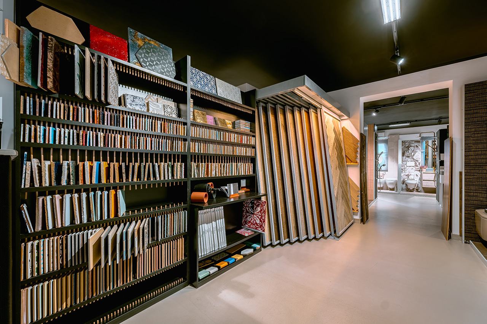

Laruccia è una storia di famiglia lunga oltre 75 anni che parte nel 1939 con l’apertura di un piccolo punto vendita nel centro di Polignano a Mare e arriva sino ai nostri giorni con uno showroom di 800 mq e un’area commerciale di 15.000 mq dedicata allo stoccaggio di materiale.
Dal 2015 una nuova sfida: Laruccia sbarca online con l’apertura di un e-commerce per la vendita di ceramiche, parquet, sanitari, rubinetterie, vasche, cabine e piatti doccia, mobili e arredo bagno, caminetti, stufe e climatizzatori a prezzi competitivi.
Il nuovissimo showroom, inaugurato nell’autunno del 2024, può vantare una superficie di 800 mq per la presentazione di prodotti di alto livello di alcuni dei marchi che si propongono come leader nel mercato del settore edile e delle rifiniture per la casa: Flaminia, Cea, Ritmonio, Bongio, Mutina, Florim, Antonio Lupi, Cerasa, Original Parquet, Treesse.
